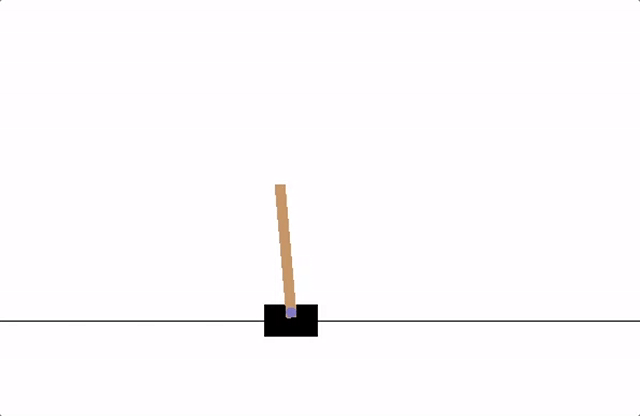
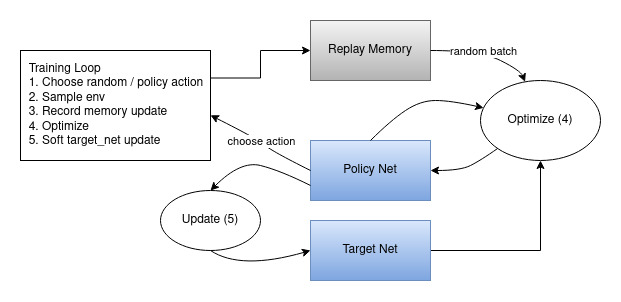

备注
点击此处下载完整示例代码
强化学习（DQN）教程¶
创建于：2025 年 4 月 1 日 | 最后更新：2025 年 4 月 1 日 | 最后验证：2024 年 11 月 5 日
- 作者：Adam Paszke
本教程展示了如何使用 PyTorch 在 Gymnasium 的 CartPole-v1 任务上训练深度 Q 学习（DQN）智能体。
您可能需要阅读原始的深度 Q 学习（DQN）论文来获得帮助。
任务
代理必须在这两个动作之间做出选择——将购物车向左或向右移动——以使连接到购物车的杆保持直立。您可以在 Gymnasium 网站上找到有关环境和其他更具挑战性的环境的更多信息。

CartPole
随着代理观察环境当前状态并选择一个动作，环境将过渡到新状态，并返回一个表示动作后果的奖励。在这个任务中，每经过一个增量时间步长，奖励为+1。如果杆倾斜得太远或购物车偏离中心超过 2.4 个单位，环境将终止。这意味着表现更好的场景将运行更长时间，累积更大的回报。
CartPole 任务设计得使得代理的输入是代表环境状态的 4 个实数值（位置、速度等）。我们不进行任何缩放，将这些 4 个输入传递到一个具有 2 个输出的小型全连接网络中，每个动作一个输出。该网络被训练来预测给定输入状态的每个动作的预期值。然后选择具有最高预期值的动作。
软件包
首先，让我们导入所需的软件包。首先，我们需要 gymnasium 环境，通过 pip 安装。这是 OpenAI Gym 原始项目的分支，自 Gym v0.19 以来由同一团队维护。如果您在 Google Colab 上运行此代码，请执行以下操作：
%%bash
pip3 install gymnasium[classic_control]
我们还将使用以下 PyTorch 功能：
神经网络（
torch.nn）优化（
torch.optim）自动微分（
torch.autograd）
import gymnasium as gym
import math
import random
import matplotlib
import matplotlib.pyplot as plt
from collections import namedtuple, deque
from itertools import count
import torch
import torch.nn as nn
import torch.optim as optim
import torch.nn.functional as F
env = gym.make("CartPole-v1")
# set up matplotlib
is_ipython = 'inline' in matplotlib.get_backend()
if is_ipython:
from IPython import display
plt.ion()
# if GPU is to be used
device = torch.device(
"cuda" if torch.cuda.is_available() else
"mps" if torch.backends.mps.is_available() else
"cpu"
)
回放记忆（¶）
我们将使用经验回放记忆来训练我们的 DQN。它存储了智能体观察到的转换，使我们能够稍后重用这些数据。通过从中随机采样，构建批次的转换将变得去相关。已经证明这极大地稳定并改善了 DQN 的训练过程。
因此，我们需要两个类：
Transition- 表示环境中单个转换的命名元组。它本质上将（状态，动作）对映射到它们的（下一个状态，奖励）结果，其中状态是后面描述的屏幕差异图像。ReplayMemory- 一个有界大小的循环缓冲区，用于存储最近观察到的转换。它还实现了一个.sample()方法，用于选择随机批次转换进行训练。
Transition = namedtuple('Transition',
('state', 'action', 'next_state', 'reward'))
class ReplayMemory(object):
def __init__(self, capacity):
self.memory = deque([], maxlen=capacity)
def push(self, *args):
"""Save a transition"""
self.memory.append(Transition(*args))
def sample(self, batch_size):
return random.sample(self.memory, batch_size)
def __len__(self):
return len(self.memory)
现在，让我们定义我们的模型。但在那之前，让我们简要回顾一下 DQN 是什么。
DQN 算法
我们的环境是确定性的，因此为了简化，这里的所有方程也都是以确定性方式表述的。在强化学习文献中，这些方程还会包含对环境随机转换的期望。
我们的目的是训练一个策略，该策略试图最大化折扣累积奖励 \(R_{t_0} = \sum_{t=t_0}^{\infty} \gamma^{t - t_0} r_t\)，其中 \(R_{t_0}\) 也称为回报。折扣 \(\gamma\) 应该是一个介于 \(0\) 和 \(1\) 之间的常数，以确保求和收敛。较低的 \(\gamma\) 使得来自不确定的远期奖励对我们代理的重要性低于近期的奖励，后者它有足够的信心。这也鼓励代理收集时间上更接近的奖励，而不是时间上更远的等效奖励。
Q 学习的核心思想是，如果我们有一个函数 \(Q^*: 状态 \times 行动 \rightarrow \mathbb{R}\)，它可以告诉我们如果我们在一个给定的状态下采取一个行动，我们的回报将会是多少，那么我们可以很容易地构建一个最大化我们奖励的策略：
然而，我们对世界的了解并不全面，因此我们无法访问 \(Q^*\)。但是，由于神经网络是通用函数逼近器，我们可以简单地创建一个并训练它来模拟 \(Q^*\)。
对于我们的训练更新规则，我们将使用一个事实：对于某些策略的每个 \(Q\) 函数都遵循贝尔曼方程：
两个等式两边的差异称为时间差误差，\(\delta\)：
为了最小化这个误差，我们将使用 Huber 损失。当误差较小时，Huber 损失类似于均方误差，而当误差较大时，则类似于绝对误差——这使得它在\(Q\)的估计非常噪声时对异常值更加鲁棒。我们将在从重放记忆中采样的一个批次转换\(B\)上计算这个损失：
Q 网络
我们的模式将是一个前馈神经网络，它接受当前和前一个屏幕补丁之间的差异。它有两个输出，分别表示 \(Q(s, \mathrm{left})\) 和 \(Q(s, \mathrm{right})\)（其中 \(s\) 是网络的输入）。实际上，网络试图预测在给定当前输入的情况下采取每个动作的预期回报。
class DQN(nn.Module):
def __init__(self, n_observations, n_actions):
super(DQN, self).__init__()
self.layer1 = nn.Linear(n_observations, 128)
self.layer2 = nn.Linear(128, 128)
self.layer3 = nn.Linear(128, n_actions)
# Called with either one element to determine next action, or a batch
# during optimization. Returns tensor([[left0exp,right0exp]...]).
def forward(self, x):
x = F.relu(self.layer1(x))
x = F.relu(self.layer2(x))
return self.layer3(x)
训练 ¶
超参数和工具
此单元格实例化我们的模型及其优化器，并定义了一些实用工具：
select_action- 将根据ε贪婪策略选择一个动作。简单来说，我们有时会使用我们的模型来选择动作，有时我们会随机均匀地采样一个动作。选择随机动作的概率将从EPS_START开始，并以指数方式衰减到EPS_END。EPS_DECAY控制衰减速率。plot_durations- 一个用于绘制剧集持续时间的辅助工具，以及过去 100 个剧集的平均值（官方评估中使用的度量）。该图将位于包含主要训练循环的单元格下方，并在每个剧集后更新。
# BATCH_SIZE is the number of transitions sampled from the replay buffer
# GAMMA is the discount factor as mentioned in the previous section
# EPS_START is the starting value of epsilon
# EPS_END is the final value of epsilon
# EPS_DECAY controls the rate of exponential decay of epsilon, higher means a slower decay
# TAU is the update rate of the target network
# LR is the learning rate of the ``AdamW`` optimizer
BATCH_SIZE = 128
GAMMA = 0.99
EPS_START = 0.9
EPS_END = 0.05
EPS_DECAY = 1000
TAU = 0.005
LR = 1e-4
# Get number of actions from gym action space
n_actions = env.action_space.n
# Get the number of state observations
state, info = env.reset()
n_observations = len(state)
policy_net = DQN(n_observations, n_actions).to(device)
target_net = DQN(n_observations, n_actions).to(device)
target_net.load_state_dict(policy_net.state_dict())
optimizer = optim.AdamW(policy_net.parameters(), lr=LR, amsgrad=True)
memory = ReplayMemory(10000)
steps_done = 0
def select_action(state):
global steps_done
sample = random.random()
eps_threshold = EPS_END + (EPS_START - EPS_END) * \
math.exp(-1. * steps_done / EPS_DECAY)
steps_done += 1
if sample > eps_threshold:
with torch.no_grad():
# t.max(1) will return the largest column value of each row.
# second column on max result is index of where max element was
# found, so we pick action with the larger expected reward.
return policy_net(state).max(1).indices.view(1, 1)
else:
return torch.tensor([[env.action_space.sample()]], device=device, dtype=torch.long)
episode_durations = []
def plot_durations(show_result=False):
plt.figure(1)
durations_t = torch.tensor(episode_durations, dtype=torch.float)
if show_result:
plt.title('Result')
else:
plt.clf()
plt.title('Training...')
plt.xlabel('Episode')
plt.ylabel('Duration')
plt.plot(durations_t.numpy())
# Take 100 episode averages and plot them too
if len(durations_t) >= 100:
means = durations_t.unfold(0, 100, 1).mean(1).view(-1)
means = torch.cat((torch.zeros(99), means))
plt.plot(means.numpy())
plt.pause(0.001) # pause a bit so that plots are updated
if is_ipython:
if not show_result:
display.display(plt.gcf())
display.clear_output(wait=True)
else:
display.display(plt.gcf())
训练循环
最后，训练我们模型的代码。
在这里，您可以找到一个 optimize_model 函数，该函数执行优化的一步。它首先采样一个批次，将所有张量连接成一个单一的，计算\(Q(s_t, a_t)\)和\(V(s_{t+1}) = \max_a Q(s_{t+1}, a)\)，并将它们组合到我们的损失中。根据定义，如果\(s\)是终端状态，则设置\(V(s) = 0\)。我们还使用目标网络来计算\(V(s_{t+1})\)以增加稳定性。目标网络在每一步通过受超参数 TAU 控制的软更新进行更新，该超参数之前已定义。
def optimize_model():
if len(memory) < BATCH_SIZE:
return
transitions = memory.sample(BATCH_SIZE)
# Transpose the batch (see https://stackoverflow.com/a/19343/3343043 for
# detailed explanation). This converts batch-array of Transitions
# to Transition of batch-arrays.
batch = Transition(*zip(*transitions))
# Compute a mask of non-final states and concatenate the batch elements
# (a final state would've been the one after which simulation ended)
non_final_mask = torch.tensor(tuple(map(lambda s: s is not None,
batch.next_state)), device=device, dtype=torch.bool)
non_final_next_states = torch.cat([s for s in batch.next_state
if s is not None])
state_batch = torch.cat(batch.state)
action_batch = torch.cat(batch.action)
reward_batch = torch.cat(batch.reward)
# Compute Q(s_t, a) - the model computes Q(s_t), then we select the
# columns of actions taken. These are the actions which would've been taken
# for each batch state according to policy_net
state_action_values = policy_net(state_batch).gather(1, action_batch)
# Compute V(s_{t+1}) for all next states.
# Expected values of actions for non_final_next_states are computed based
# on the "older" target_net; selecting their best reward with max(1).values
# This is merged based on the mask, such that we'll have either the expected
# state value or 0 in case the state was final.
next_state_values = torch.zeros(BATCH_SIZE, device=device)
with torch.no_grad():
next_state_values[non_final_mask] = target_net(non_final_next_states).max(1).values
# Compute the expected Q values
expected_state_action_values = (next_state_values * GAMMA) + reward_batch
# Compute Huber loss
criterion = nn.SmoothL1Loss()
loss = criterion(state_action_values, expected_state_action_values.unsqueeze(1))
# Optimize the model
optimizer.zero_grad()
loss.backward()
# In-place gradient clipping
torch.nn.utils.clip_grad_value_(policy_net.parameters(), 100)
optimizer.step()
下面，您可以找到主要的训练循环。一开始我们重置环境并获得初始的 state 张量。然后，我们采样一个动作，执行它，观察下一个状态和奖励（总是 1），然后优化我们的模型一次。当剧集结束时（我们的模型失败），我们重新启动循环。
在下面，如果可用 GPU，则将 num_episodes 设置为 600，否则安排 50 个训练轮次，以免训练时间过长。然而，50 个轮次对于观察 CartPole 的良好性能是不够的。你应该看到模型在 600 个训练轮次内不断达到 500 步。训练强化学习代理可能是一个嘈杂的过程，因此如果未观察到收敛，重新启动训练可能会产生更好的结果。
if torch.cuda.is_available() or torch.backends.mps.is_available():
num_episodes = 600
else:
num_episodes = 50
for i_episode in range(num_episodes):
# Initialize the environment and get its state
state, info = env.reset()
state = torch.tensor(state, dtype=torch.float32, device=device).unsqueeze(0)
for t in count():
action = select_action(state)
observation, reward, terminated, truncated, _ = env.step(action.item())
reward = torch.tensor([reward], device=device)
done = terminated or truncated
if terminated:
next_state = None
else:
next_state = torch.tensor(observation, dtype=torch.float32, device=device).unsqueeze(0)
# Store the transition in memory
memory.push(state, action, next_state, reward)
# Move to the next state
state = next_state
# Perform one step of the optimization (on the policy network)
optimize_model()
# Soft update of the target network's weights
# θ′ ← τ θ + (1 −τ )θ′
target_net_state_dict = target_net.state_dict()
policy_net_state_dict = policy_net.state_dict()
for key in policy_net_state_dict:
target_net_state_dict[key] = policy_net_state_dict[key]*TAU + target_net_state_dict[key]*(1-TAU)
target_net.load_state_dict(target_net_state_dict)
if done:
episode_durations.append(t + 1)
plot_durations()
break
print('Complete')
plot_durations(show_result=True)
plt.ioff()
plt.show()
下面是说明整体数据流的示意图。

行动是随机选择或基于策略选择的，从 gym 环境中获取下一个步骤样本。我们将结果记录在重放记忆中，并在每次迭代中运行优化步骤。优化从重放记忆中随机选择一个批次进行新策略的训练。在优化中，“较旧”的目标网络也用于计算预期的 Q 值。每一步都会对其权重进行软更新。
脚本总运行时间：（0 分钟 0.000 秒）